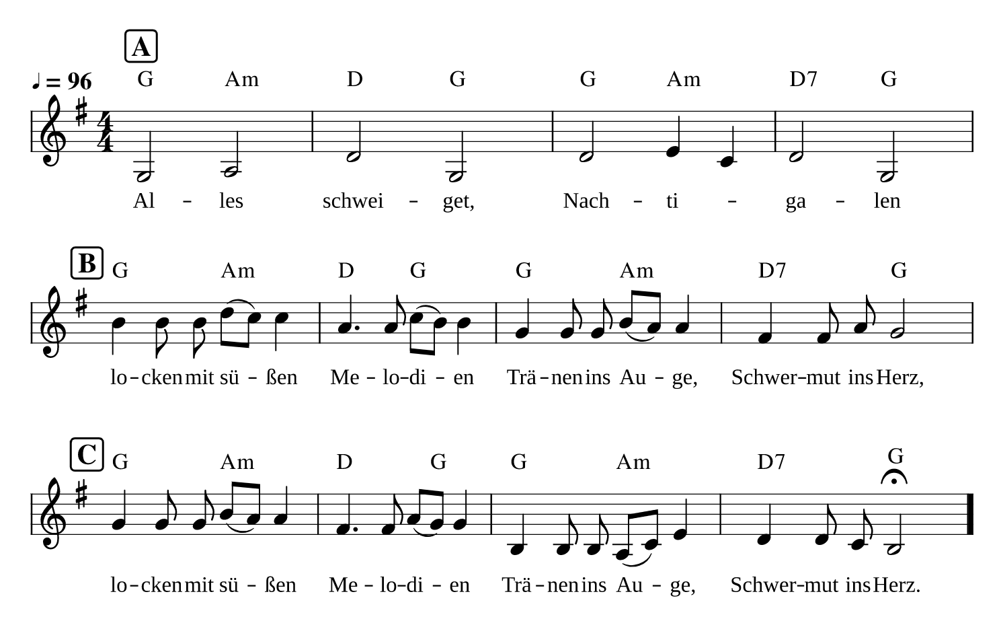
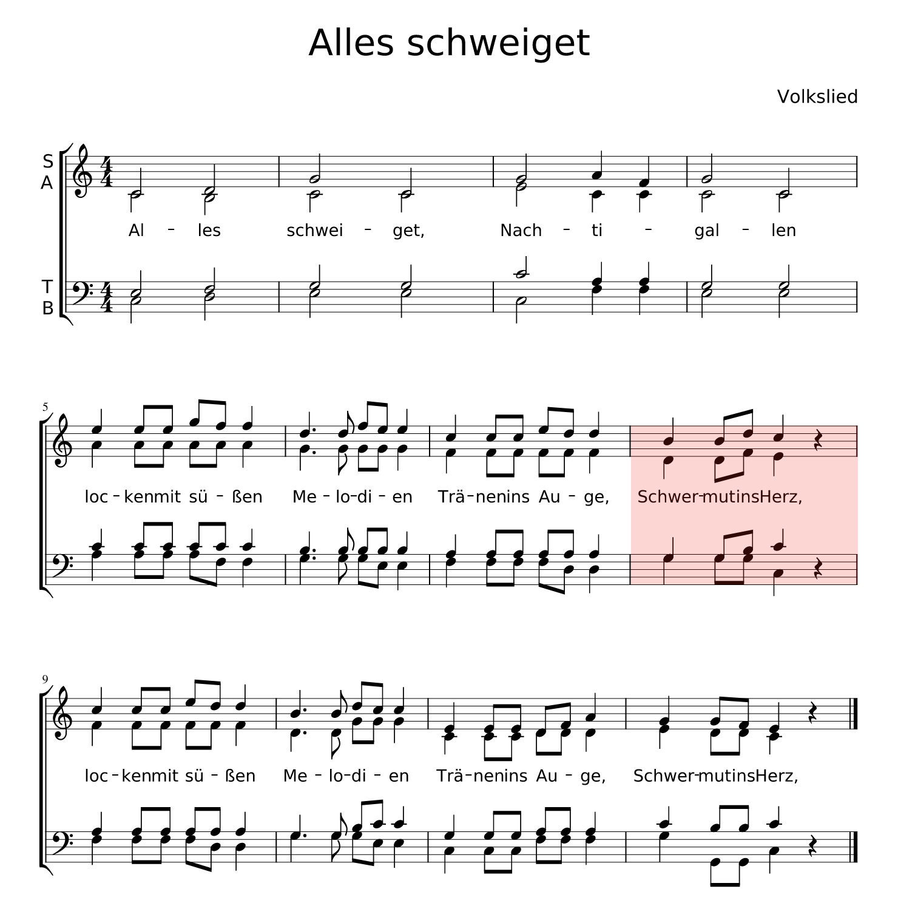

Here's a German round that Ric and Dorry sang during the Colorado hut trips. I absorbed the German words and beautiful interweaving melody a teenaged telemark skier without really understanding the lyrics in English. With some help from Google Translate and a thesaurus, I offer this translation -- one which is very close to what I offered to my children as I sang this song as a bedtime lullaby for them.
| Alles schweiget, Nachtigallen Locken mit süßen Melodien Tränen ins Auge, Schwermut ins Herz. | All is quiet. Nightingales Conjure with honeyed Melodies Tears in the eye Pain in the heart. |
As I recall, Ric said he had learned it from his brothers who had served in World War II and learned it from German colleagues -- either prisoners of war or when fighting ceased for holidays and such humanizing music could be heard drifting over the enemy lines. Today, the Internet kindly provides both sheet music for the aspiring vocalist and a YouTube rendition so you can hear the three parts intertwining:

